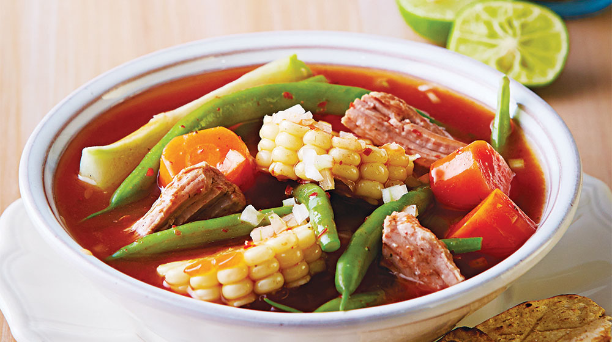
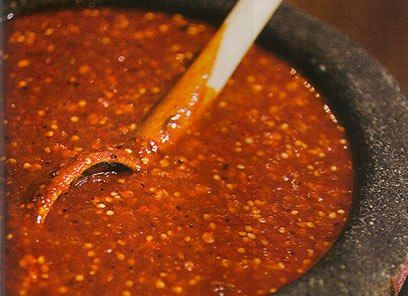
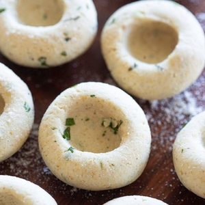

Este mole de olla no puede faltar en tu recetario.

Aprende a hacer la receta de la abuela de manera fácil, rápida y sobre todo, deliciosa.
Ingredientes PARA 4 PERSONAS
1/2 kg chambarete
1/2 kg retazo de res en trozos
2 huesos de tuétano en trozos
1/2 Cebolla
1/2 cabeza de ajos
2 elotes cortados en cuartos
2 xoconostles, sin piel y sin semillas y cortados en sextos
1 chayote, pelado y en cubos medianos
Elotes en tercios
1 papa grande en cubos medianos
1 calabaza grande en medias lunas
1 zanahorias en medias lunas
PARA LA SALSA
1/4 cebolla
2 dientes de ajos
2 chiles ancho , desvenados y sin semillas
1 chile pasilla , desvenado y sin semillas
2 chiles guajillo , desvenados y sin semillas
3 jitomates , en mitades
3 cucharadas de aceite
2 ramas Epazote
PARA LOS CHOCHOYOTES
200 gr de masa de maíz
1 cucharadita de aceite
1 cucharada de epazote
Sal al gusto
PROCEDIMIENTO
COLOCA la carne, la cebolla y cubre con agua. Añade sal y cocina por 30 minutos en una olla de presión a partir de que suelte vapor.
RETIRA la cebolla y los ajos. Añade los elotes y el xoconostle. Cocina por 20 minutos.
PARA LA SALSA
CALIENTA aceite en una cacerola y acitrona la cebolla y el ajo.
AÑADE los chiles y cocina sin dejar de mover hasta que se doren. Agrega el jitomate y cocina por 10 minutos.
VIERTE un poco de agua y sal. Tapa y cocina por 10 minutos, deja enfriar.
LICUA y cuela. Sofríe en una cacerola y reserva.

Ejemplo de la salsa
PARA LOS CHOCHOYOTES
MEZCLA la masa de maíz con el aceite, epazote y sal. Mezcla y forma bolitas de 2 centímetros.
HAZ un hueco con la yema de tu dedo, como si fuera una cazuelita. Reserva
VIERTE la salsa al caldo y mezcla. Agrega las ramas de epazote y sazona de nuevo.
AÑADE los chayotes y las papas. Cocina por 8 minutos. Agrega los ejotes y zanahorias.
TAPA y cocina por 10 minutos más. Agrega los chochoyotes y cocina por 10 minutos o hasta que todo esté cocido.

Ejemplo de los chochoyotes
{kind=link}
{kind=link}